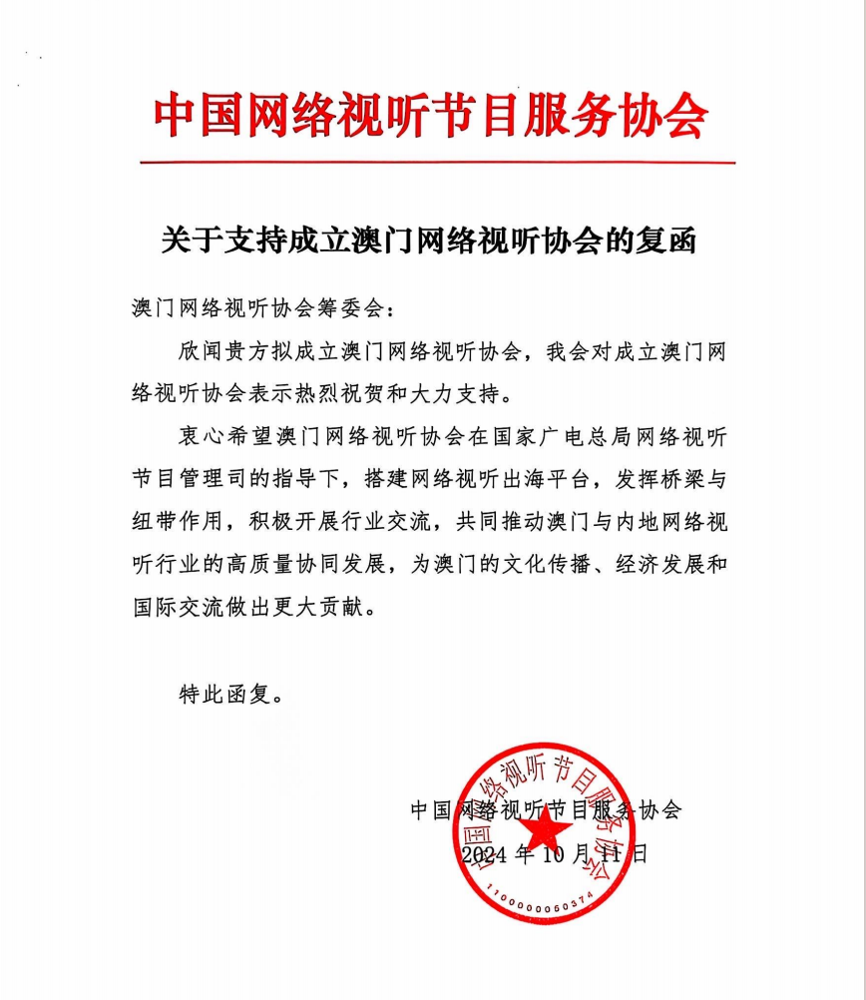

成立背景

2025 年 3 月正式成立
在國家廣電總局網絡視聽節目管理司、中國網絡視聽節目服務協會的推動，以及澳門中聯辦宣傳文體部支持下，澳門網絡視聽協會已於 2025 年 3 月正式成立，旨在推動澳門視聽產業的專業化與國際化發展。
協會由來自新聞、影視、新媒體及網絡創意等領域的專業人士組成，是一個跨媒體、跨平台的行業組織。
協會宗旨
促進交流合作、提升創作水準、搭建產業平台、拓展葡語市場。
核心使命
促進澳門與內地及國際網絡視聽產業的交流合作，提升澳門視聽內容的創作與製作水準，並搭建產業鏈整合平台，讓本地視聽作品進入更廣闊的市場。
協會將組織業界研討會、專題培訓、作品展映及行業對接活動，推動產業生態持續成熟。
特色定位
特別關注葡語國家市場，促進中葡文化交流，發揮澳門「中葡平台」的獨特優勢，讓中華視聽內容經澳門走向葡語世界。
同時聯動粵港澳大灣區與民族地區資源，構建全球化的傳播與資源網絡。
組織架構
協會設會員大會、理事會及監事會，由新聞、影視、新媒體與網絡創意等領域專業人士組成。
會長由澳門日報社長陸波擔任，副會長單位來自澳門有線、澳廣視、蓮花衛視等知名媒體機構，確保協會的專業性與影響力。理事會由澳門文化推廣協會、網絡創意發展協會、新媒體聯盟、演藝人協會等業界組織負責；監事會由互聯網文化協會等機構監督運作，確保協會發展的透明性與規範性。
第十至十三屆全國人大代表
會員大會名單
會長、副會長與秘書長，由澳門主流媒體及新媒體機構代表出任。
| # | 職務 | 姓名 | 代表機構 |
|---|---|---|---|
| 1 | 會長 | 陸波 | 澳門日報社長 |
| 2 | 副會長 | 羅崇雯 | 澳廣視 |
| 3 | 副會長 | 李自松 | 蓮花衛視 |
| 4 | 副會長 | 林燕妮 | 澳門有線 |
| 5 | 副會長 | 鄭秀明 | 華僑報 |
| 6 | 副會長 | 胡根 | 大眾報 |
| 7 | 副會長 | 黃宇光 | 濠江日報 |
| 8 | 副會長 | 謝德華 | 市民日報 |
| 9 | 副會長 | 龔永興 | 正報 |
| 10 | 副會長 | 林潤莖 | 現代澳門日報 |
| 11 | 副會長 | 歐陽俊威 | 星報 |
| 12 | 副會長 | 林昶 | 新華澳報 |
| 13 | 副會長 | 江海濤 | 澳覓 |
| 14 | 副會長 | 徐其蓓 | 澳門直播協會 |
| 15 | 秘書長 | 潘秋婷 | —— |
理事會與監事會名單
翁振軒擔任副理事長，並兼任電子商務專委會主任（詳見下方專委會名單）。
| # | 職務 | 姓名 | 備註 |
|---|---|---|---|
| 1 | 理事長 | 丁瀟 | —— |
| 2 | 副理事長 | 雷民強 | —— |
| 3 | 副理事長 | 張美然 | —— |
| 4 | 副理事長 | 區世源 | 國際傳播專委會主任 |
| 5 | 副理事長 | 龍世傑 | —— |
| 6 | 副理事長 | 翁振軒 | 粵港澳大灣區電子商會會長 · 電子商務專委會主任 |
| 7 | 副理事長 | 王笛 | 澳門影視產業發展促進會 |
| 8 | 理事 | 許肇尤 | 短視頻專委會主任 |
| 9 | 理事 | 呂瑤 | —— |
| 10 | 理事 | 曲強奎 | —— |
| 11 | 監事長 | 黎世祺 | 澳門互聯網文化協會會長 |
| 12 | 副監事長 | 陳志峰 | —— |
| 13 | 監事 | 劉永謙 | 綜藝專委會主任 |
| 14 | 監事 | 勞嘉濠 | 影視專委會主任 |
| 15 | 監事 | 李智彬 | —— |
專業委員會主任名單
協會下設直播、綜藝、影視、微短劇、電子商務等專業委員會，由業界代表出任主任。
| # | 專業委員會 | 主任 | 狀態 |
|---|---|---|---|
| 1 | 直播 | 徐其蓓 | 澳門直播協會 |
| 2 | 綜藝 | 劉永謙 | —— |
| 3 | 學術 | （待定） | 籌備中 |
| 4 | 影視 | 勞嘉濠 | —— |
| 5 | 微短劇 | 葉浩榮 | —— |
| 6 | 網絡名人 | 李焯冬 | —— |
| 7 | 電子商務 | 翁振軒 | 粵港澳大灣區電商會會長 |
| 8 | 短視頻 | 許肇尤 | —— |
| 9 | 文旅推動 | （待定） | 籌備中 |
| 10 | 國際傳播 | 區世源 | —— |
| 11 | 譯製 | 楊艷超 | —— |
出版與研究
協會推動學術沉澱，已策劃網絡視聽研究報告並指導實務指南出版。
一、《澳門網絡視聽研究報告》
報告將結合政策環境、市場資料、內容趨勢與受眾行為等多方面進行深入探討，初步擬涵蓋數位出版、網絡遊戲產業、網絡綜藝、微短劇、網絡直播、長短視頻、音訊等方面。
除主體內容外，亦將包括總結性報告、年度觀察分析、代表性個案研究、視覺化資料圖表及政策建議部分。目前已完成策劃、資料收集與調研，初稿撰寫中，並與社科文獻出版社簽訂出版合同，預計 2026 年正式出版。
二、《微短劇在澳琴聯動下的實操指南》
由協會指導、澳門科學出版社出版的實操指南已面世。本書不側重理論，以作者實際經歷為基礎、聚焦實戰，為澳琴微短劇產業從業者與追夢人提供實用的發展指引。
本協會專站現嵌於 翁振軒 Sean Own 個人網站 之下。翁振軒於本協會擔任 副理事長 及 電子商務專委會主任。
前往翁振軒個人頁 ↗